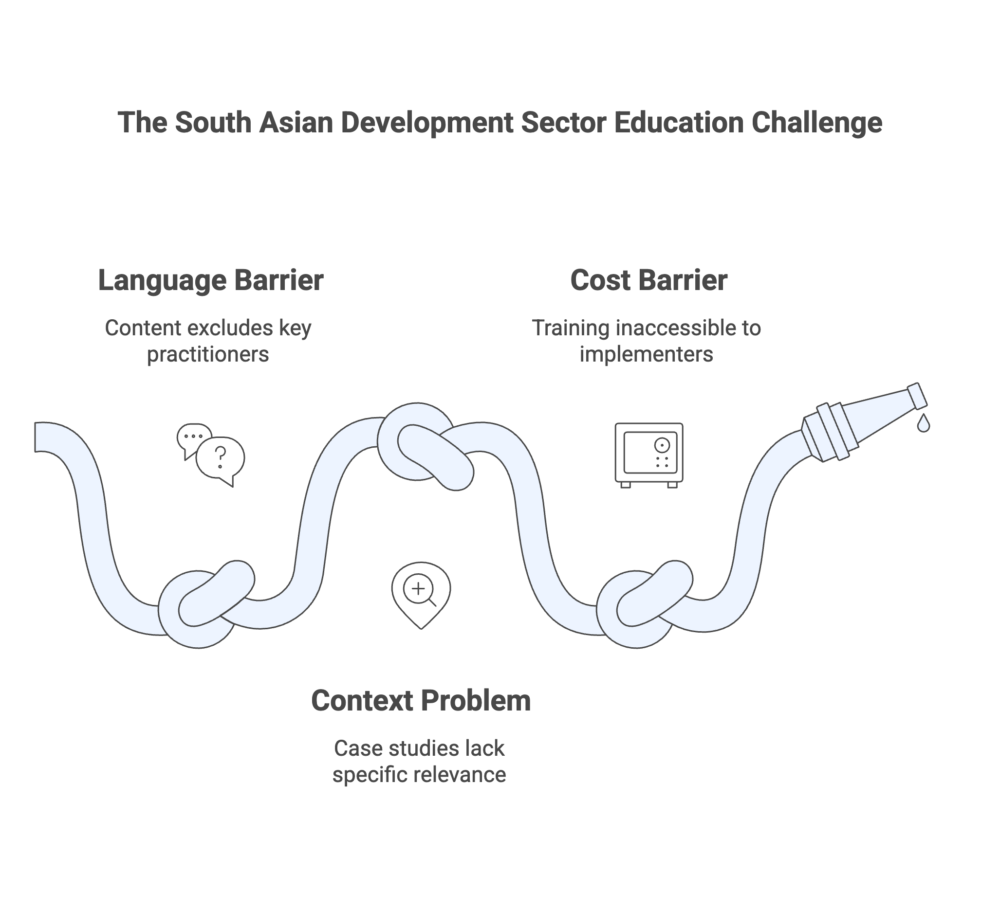
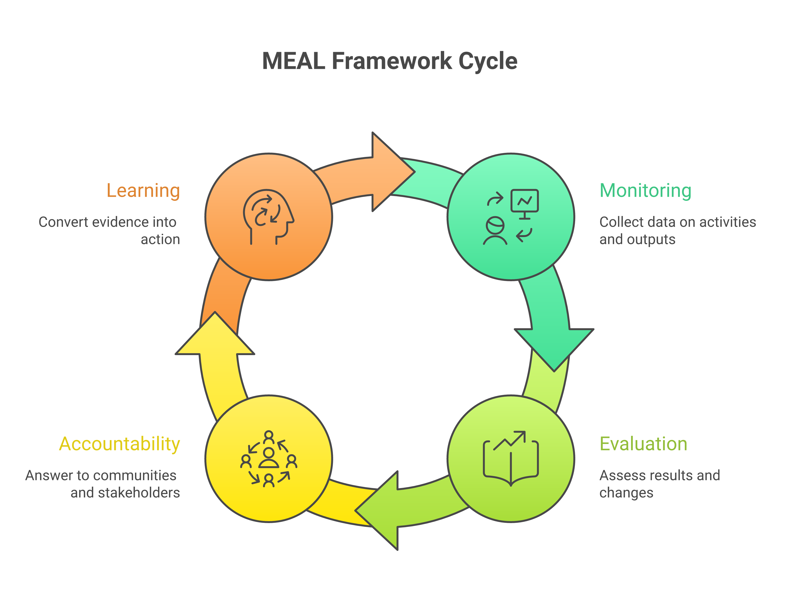
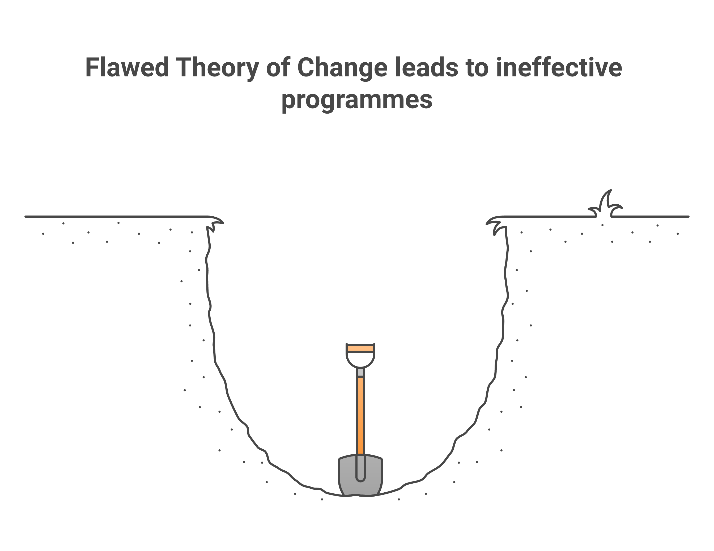
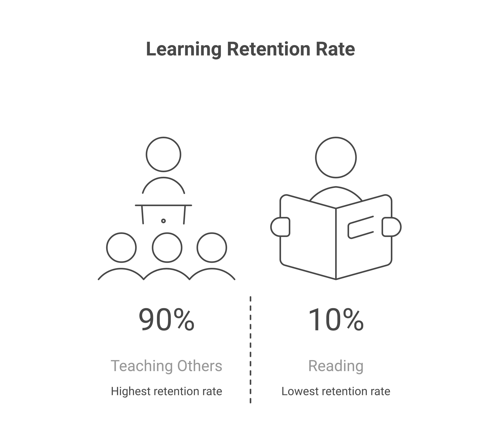
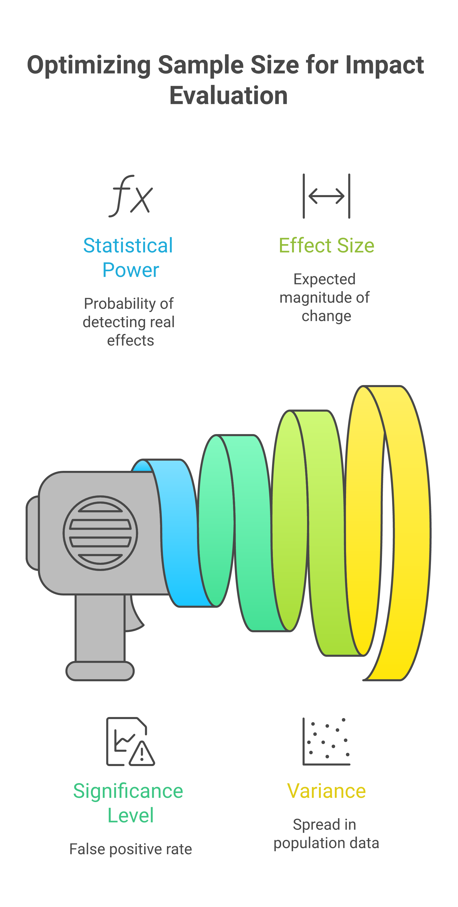
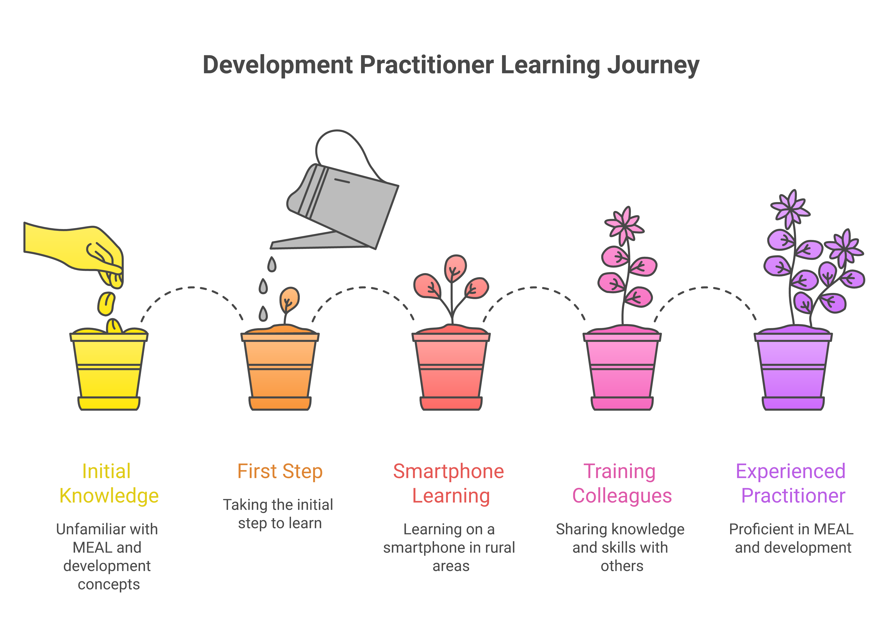
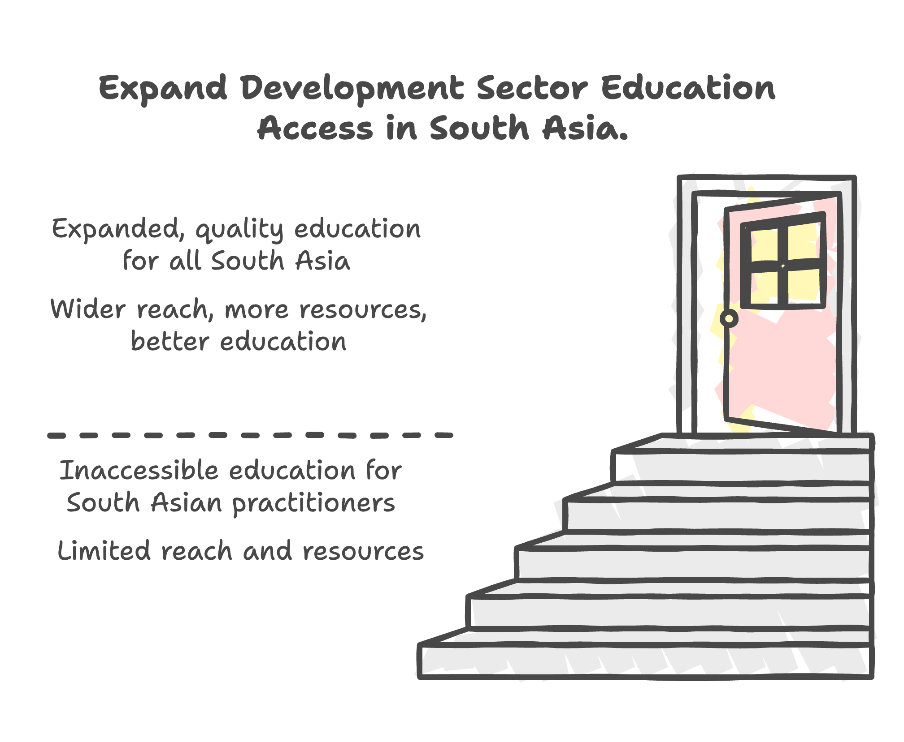

Why ImpactMojo Exists
The gap we're trying to fill and our vision for accessible development sector education across South Asia.
The ImpactMojo Blog
Insights on MEAL, Theory of Change, research methods, and building capacity in the development sector.

The gap we're trying to fill and our vision for accessible development sector education across South Asia.

A plain-language guide to Monitoring, Evaluation, Accountability, and Learning—and why all four components matter.

The mistakes that derail even well-intentioned organizations—and practical fixes for each one.

The pedagogy behind ImpactMojo's interactive approach—and why passive learning doesn't build real skills.

Statistical power and sample size calculations explained without the jargon—and why getting the numbers right matters.

How development practitioners across South Asia are building their skills and transforming their organizations.

A preview of the new tools, courses, and features we're building for the development sector.